The Wildspitze North Face
Also posted at Summitpost here
North Face and ski descent
April, 2007
After seeing Sebastian’s excellent report on a ski and climb of the Hintere Bruchkogel, I was excited by the set of steep alpine ice climbs in the area. And in winter you can get up to this amazing glacier plateau with the help of the ski industry.
Daniel Arndt was also excited about an ice climb, so he and I rode the train through the mountain up to the Pitztal ski area, then took a lift above that to get the first glimpse of the Wildspitze. We could see that the north face, our chosen objective, had long streaks of blue ice. “Yes, that is what we came for!” I enthused. We strapped on skis and descended to the Mitteljoch. I’m still a terrible skier, and the descent to the glacier was marked by kick-turns, excessive caution, and wobbly legs, especially with the rope and ice climbing gear strapped to my pack. Daniel found it a bit tough too, so at least I had a sympathetic ear for complaints!
We found two or three other parties roping up to ski across the glacier for the normal way up the mountain. The situation looked great in terms of snow deeply burying any crevasses as long as you stay away from the icefalls and travel in compression zones. Daniel and I debated the pros and cons of roping up and agreed not too for now, but we’d put our harnesses on in case we changed our mind.
We headed south, away from the main groups, though we had a nice track to follow. Eventually we saw there was a party ahead. It was great to be on the glacier, coming into the sun and admiring the mountains all around. As we neared the face, it seemed to rear up and look much steeper than the advertised 50 degrees. We took comfort in all kinds of ways we might escape the difficulties once encountered. For example we could traverse rightward to reach snow, though guessing from the actual snow we encountered on the face, it was but a thin layer over the ice!
At the base, we finally took off skis as the snow steepened, and eventually strapped them to our packs. As I kicked steps up to the bergschrund I noticed that one of the guys in the other party was Cyrille, who I’d climbed with in Arco. What a small world! We made the cumbersome switchover from skiing gear to ice climbing gear, and eventually Daniel belayed me off to get over the ‘schrund. I needed to go right where Cyrille’s partner Thomas had gone so I waited a minute for him to clear off on the ice above. Then all at once I was ice climbing, after a roughly two year hiatus from committing my weight onto tools. I placed a screw to protect Daniel’s (nonexistent) belay, then planned to run it out a long ways. We had six screws, which meant I could place two on each pitch, leaving two for each belay station. I placed another screw at about 40 meters, then, tiring a bit from the effort, I built a belay station.
I noticed a couple of things. Whew, climbing on bare, cold, Austrian ice is tiring for the arms. Then again I was a little tense. Eventually I started to recognize the sections that would “dinner-plate,” and I could nuance my swing to avoid them. Also at least one of my screws is almost too dull to penetrate the ice. Wow, I really had to work to get that one in! Plus I don’t think my set of BD Express screws are as good as the Grivel screws with the larger handle to wind the screw in. Thomas could place a screw much, much quicker than I could. Finally, the altitude was rather punishing, especially for a too-tense ice climber bashing away for a good tool placement! But aside from all that, it was a blast! I put Daniel on belay and he came up.
Now Daniel hasn’t really been ice climbing before. So right off the bat he had to learn a lot. Getting over the ‘schrund was a particularly tough puzzle. I could imagine him thinking “what do I do with my hands?” down below. But after a few minutes he appeared over the lip and began grinding up the ice. Two more parties had arrived, and in fact we’d spend the duration of the climb with Cyrille and Thomas on one side and another party on the other side of us. I’m a little shadowy on where the fourth party came in. It was real friendly overall. Daniel later said somebody was griping about some ice chunks I sent down. All of us tended to belay at the same place, almost as if stations were set up by a helpful god of the ice slope. After 55 meters or so, there would be a little tuft of snow that made it more comfortable to make a step to belay from. Above there would be a long bare ice section so the pitches were logically divided.
On the next pitch my swing started to improve, because I recovered the sense memory to flick my wrist for a more solid placement. Still, there was a section of bulgy, white ice that dinner plated rather badly, probably causing complaints from the people below. Sorry about that! Daniel came up even as clouds came around us, blocking the view to our local group of guys whacking their way up the slope. Everyone had skis on their back. When combined with the sharp tools and other gear, they gave the climbers an insectile look, each tending their own patch of ice. Off for another pitch, where I belayed at about 50 meters. I waited for Daniel to come up and oh no! I saw a glove fluttering in space - he had dropped it! Happily he had another one in his pack. “I didn’t like those gloves anyway” he said. He arrived at my belay, complaining naturally enough about all the impedementia ice climbing brings with it. “Where does the ice tool go, and the gloves are too thick to do anything and…” I told him about my method of placing the tools well, leaving my gloves in the leashes and using bare hands to get the ice screw. But for that you have to have a good sense of if the tool has a good “stick” in the ice. Once Daniel tried that at a belay but I sent an ice chunk skittering down that made him fear for his tool. One thing for sure: don’t lose a tool!
Cyrille was happy I could get pictures of him. “Will you send that to me…tonight?” he said, with emphasis. Well of course I would! But I wondered why he had to have it that night. I got home around 10:30 and told my wife, “ah I have work to do, this guy needs his picture.” But actually it was great fun to look at the pictures right away and relive the day!
The 4th pitch was the last, because after 30 meters the slope angled back and then ended in the ridge crest. I finally got to have a comfortable belay station sitting on my pack below the ridge. Ahh. What a satisfying climb it had been! I guess it was the most ice climbing I’d ever done. Lessee, there is Chair Peak and Cutthroat Peak in Washington which were great, but this one was an extra challenge because of the constant angle and hard ice. It really felt steeper than 50 degrees, more like 60, but who knows? Daniel came up and we were both psyched about what a blast it was.
Cyrille and Thomas packed up their gear and headed down, having tagged the summit before. Daniel and I walked up the ridge to stand on the summit 10 minutes later. We were in a cloud bank, but could see the sun above. Sometimes the clouds would break and we’d get a fairy-tale picture of mountains and valleys below. I had hoped to see the Dolomites or the Ortler Range from the summit, but the south was full of clouds. It was around 3:30 pm. Hmm, I don’t think we’ll try to do any more climbs! I think when the face holds snow you could move a lot faster.
Back down to the skis, then hiking down the ridge a bit further. I was squeamish, so I carried my skis down from the steep ridge crest to put them on in a basin. Daniel zoomed by me from the ridge while I got the skis ready. It had gotten cold and was snowing steadily. Brr…I stood around for too long and shivered slightly. “Let’s go!” we said, and took off together down to a flat area below the peak. Daniel had his first (only?) spectacular wipe-out when he tried to get speed to go up a hill. Oops! The odd thing was, it wasn’t a hill anyway, just an optical illusion.
Now we had an amazing hour of easy skiing through a world of ice. I felt like a kid locked in the toy store overnight, as I purred along slowly on my skis, just standing on the moving carpet and staring agog at all the icefalls and formations. Happily I didn’t fall into a crevasse because of my distraction! I had been pretty worried about descending the glacier because I didn’t consider myself a good enough skier to navigate icefalls (for example). But all the scary stuff is well to the side, there is a nice wide crevasse-free (“or so you think!” I can hear) track to descend. The sun came back out and we enjoyed the warmth, the clear air and the crazy scenery.
Eventually we were in the shaded valley, and the skiing conditions worsened. A whole cavalcade of kick turns and side-slipping got me past the last steep part. Then it was just miles of snow-covered road to reach the car, a great 2000 meter descent from the summit.
We listened to “The Wall” on the way home. The soaring guitar solos reminded us of our excellent time on the ice.
|
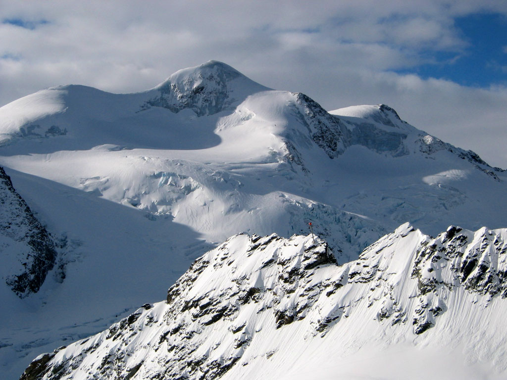 The north side of the Wildspitze as seen from the Pitztal ski area |
|
The route we took on the north wall |
|
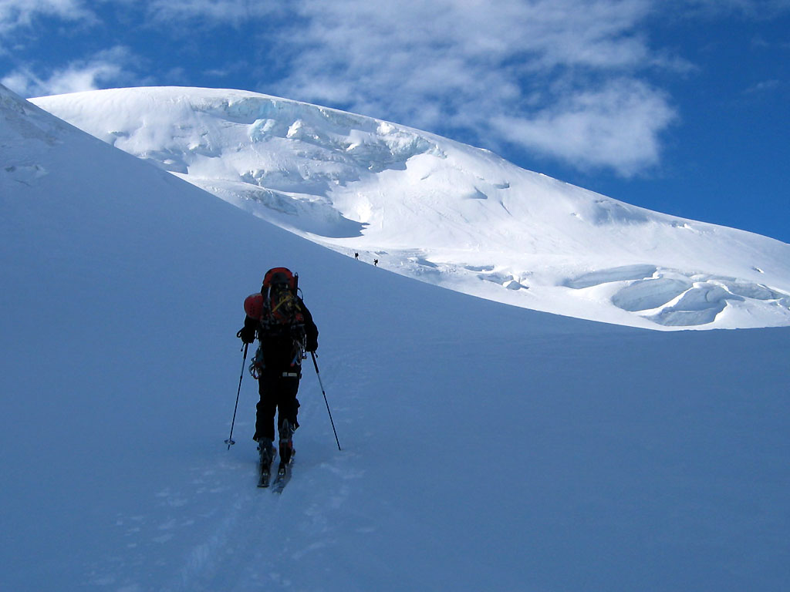 Daniel climbs the Taschach Glacier |
|
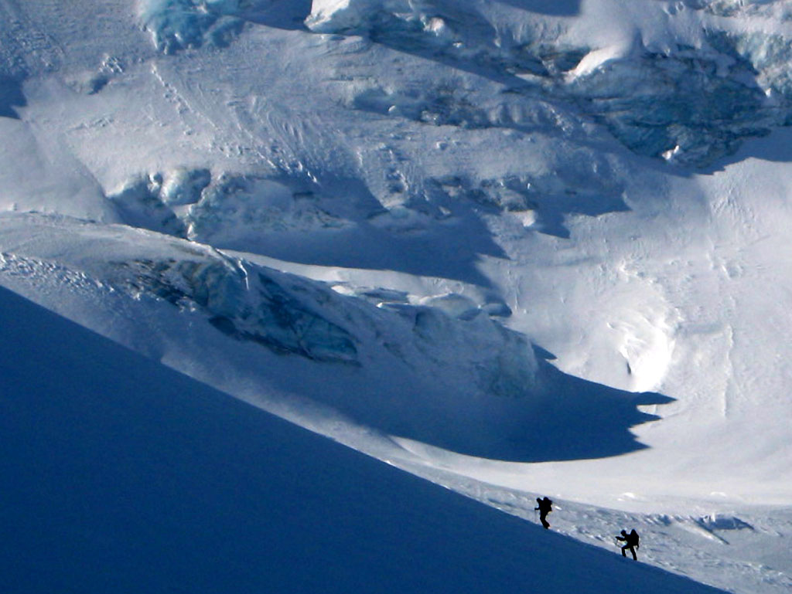 Cyrille and Thomas on the Taschach Glacier |
|
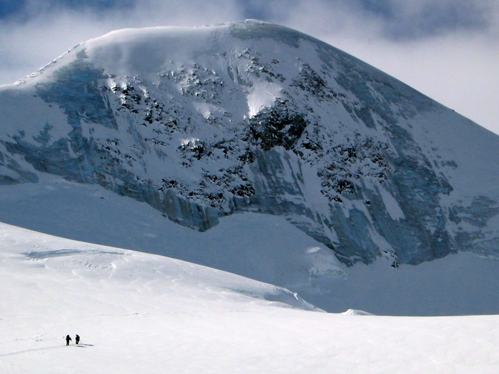 The North Wall. Lots of bare ice! |
|
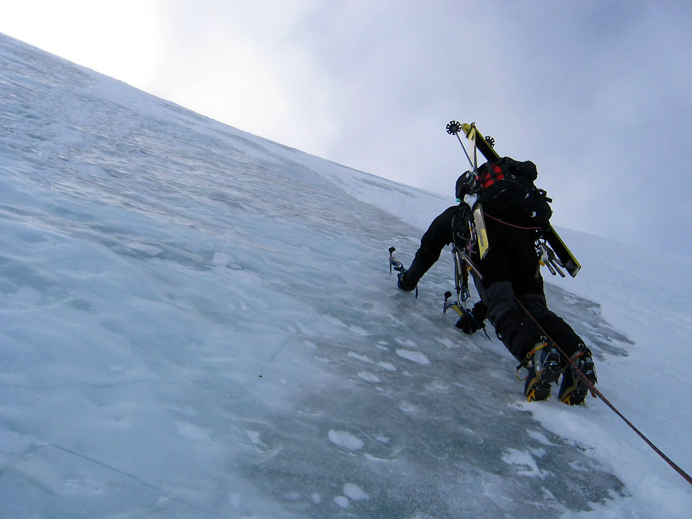 Cyrille on an ice pitch |
|
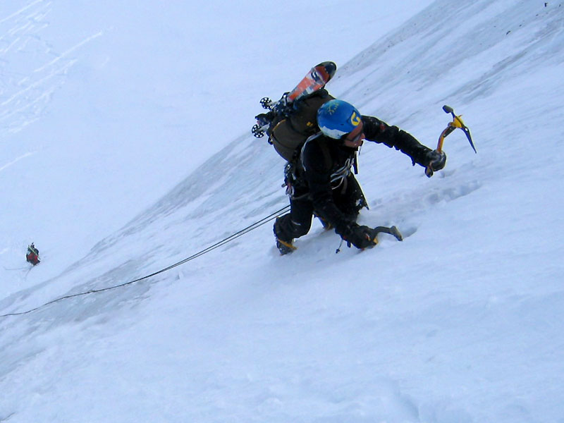 There were several parties enjoying the wall |
|
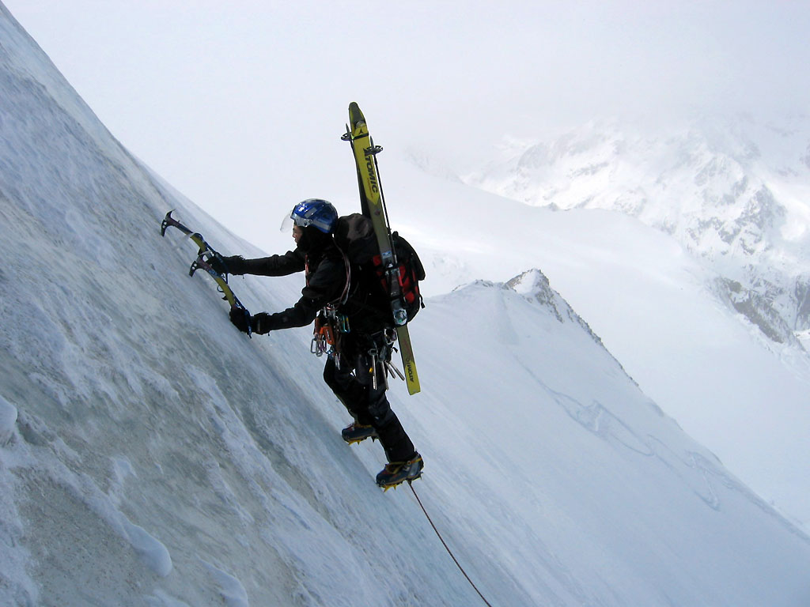 Cyrille on pitch 4 |
|
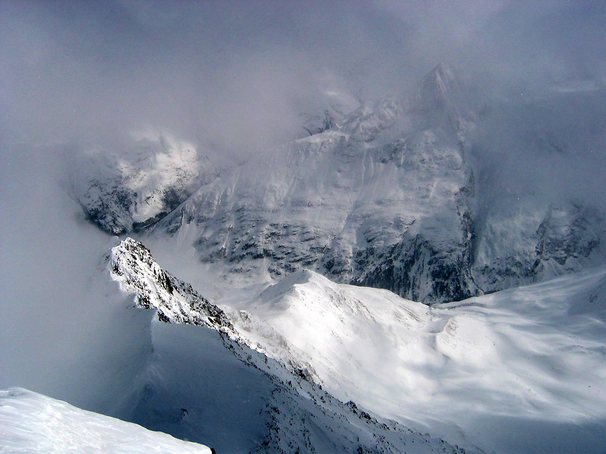 Wild mountain views from the summit |
|
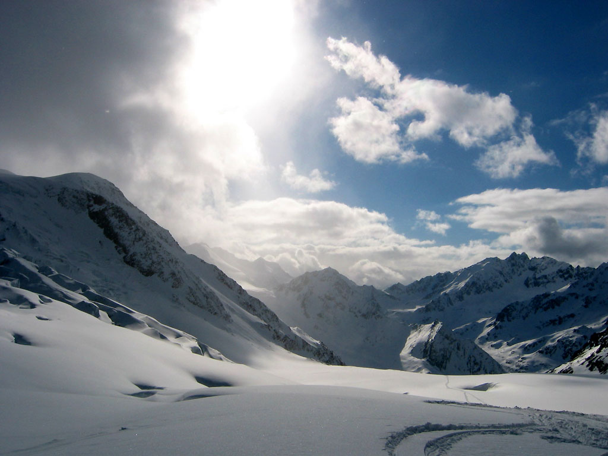 The sun returns on the Taschach Glacier |
|
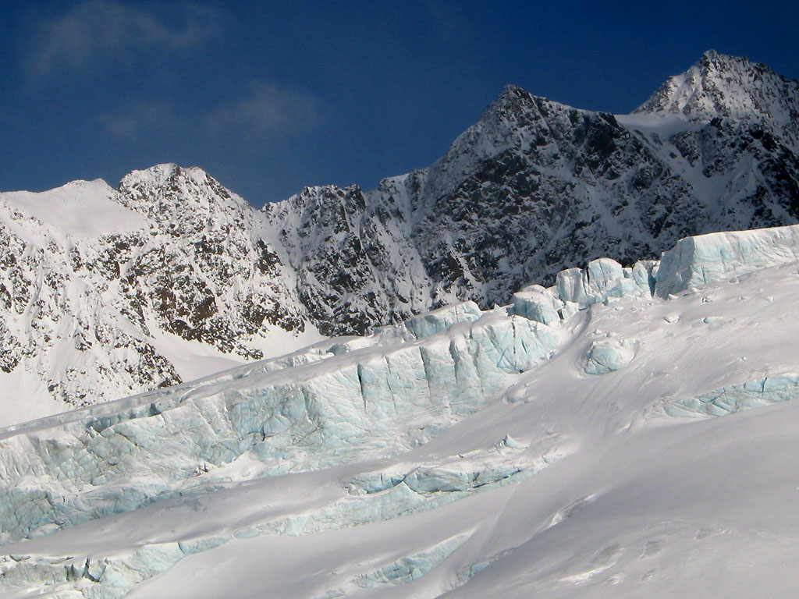 Icefalls on the glacier |
|
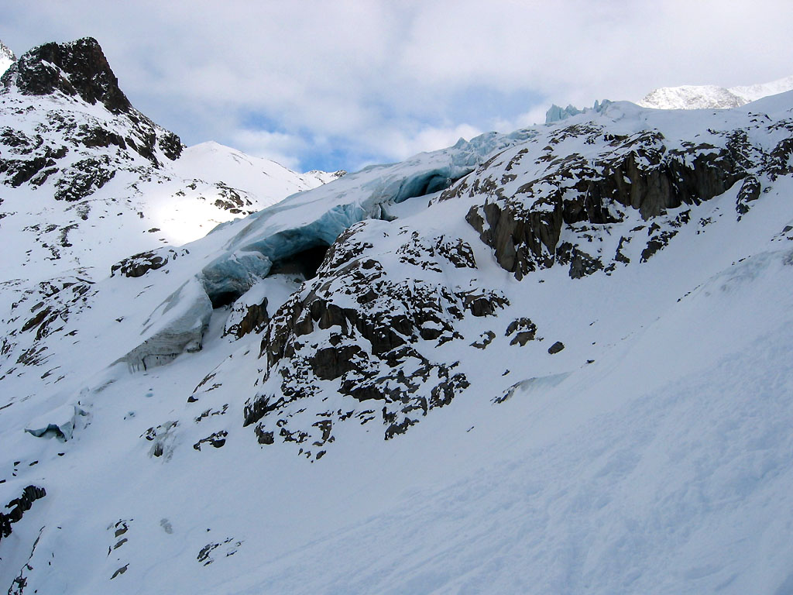 Ice caves low on the glacier |
|
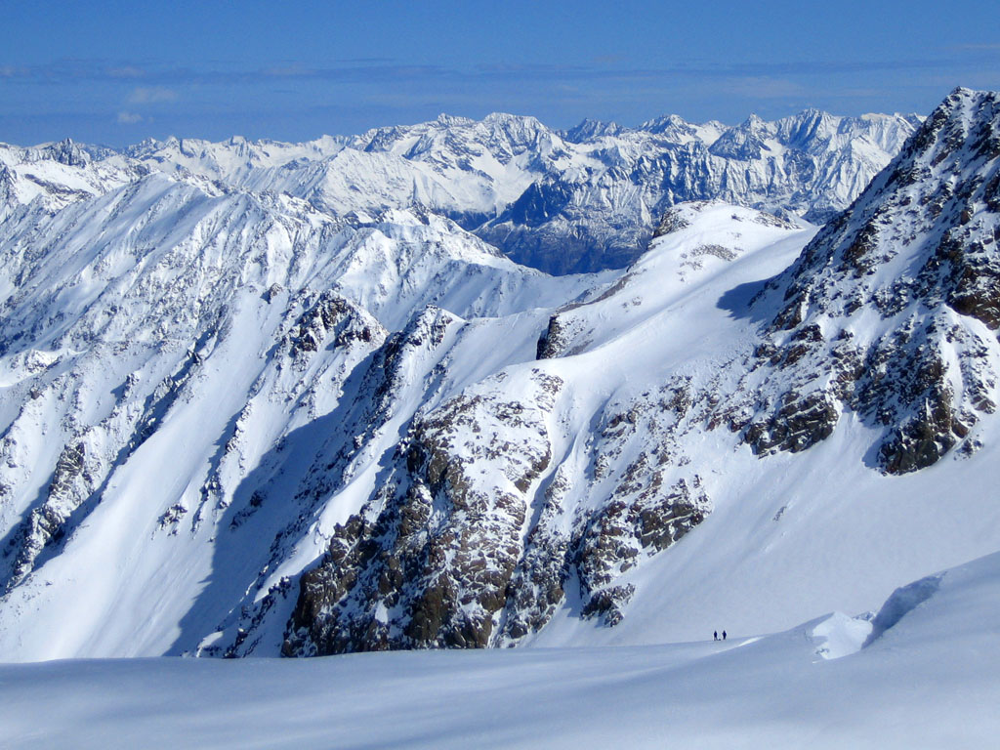 East to the Stubai Range |
|
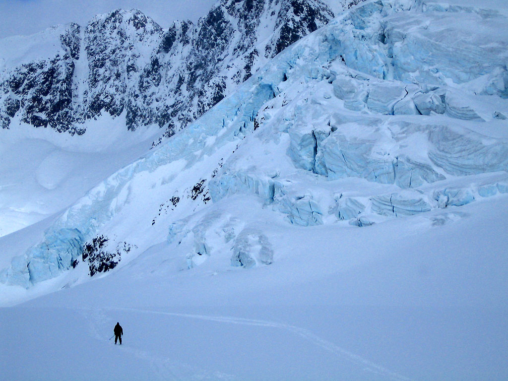 Michael skis down the glacier |
|
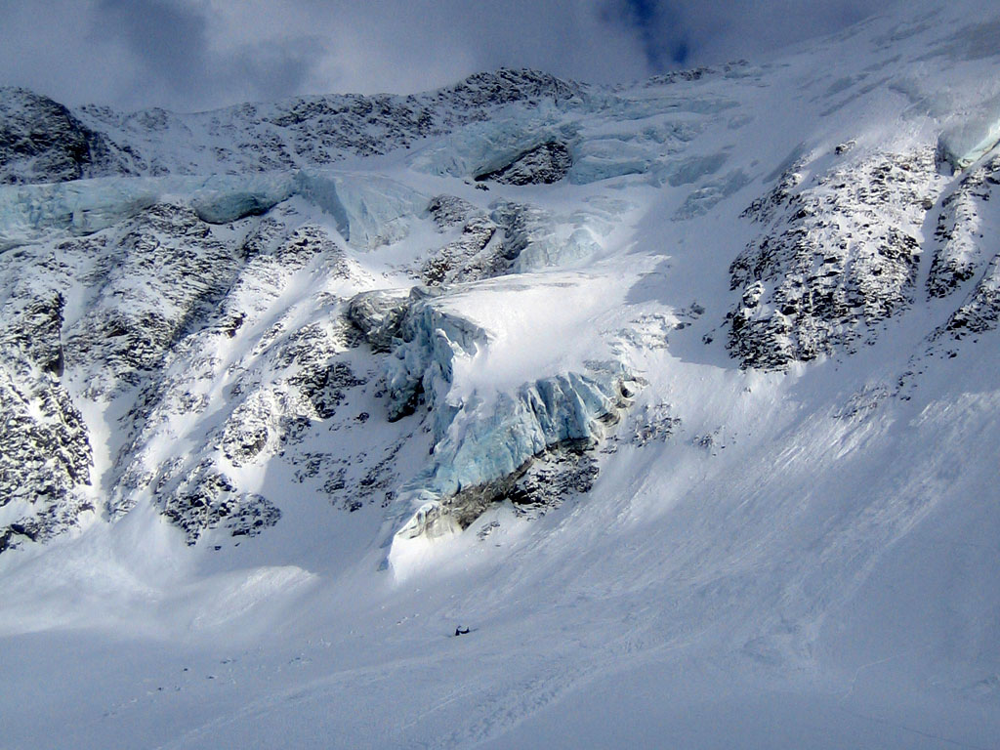 The Taschach wall |
{kind=link}
{kind=link}
{kind=link}
{kind=link}
{kind=link}
{kind=link}
{kind=link}
{kind=link}
{kind=link}
{kind=link}
{kind=link}
{kind=link}
{kind=link}
{kind=link}
{kind=link}